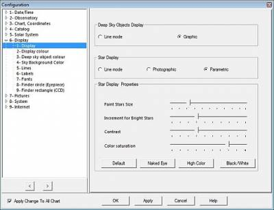
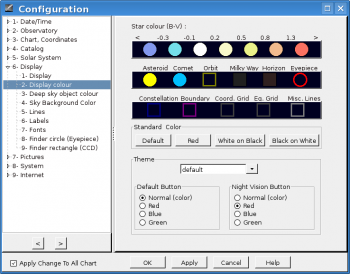
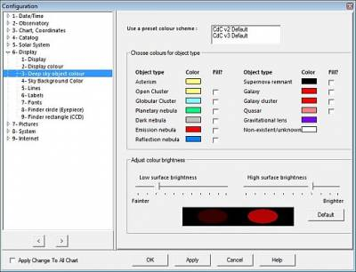
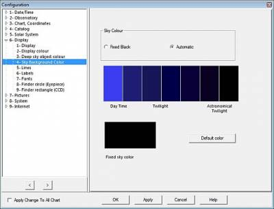
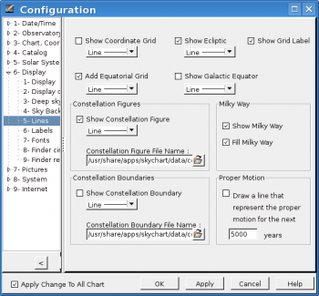
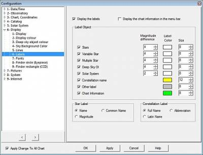
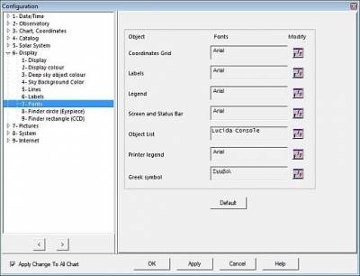
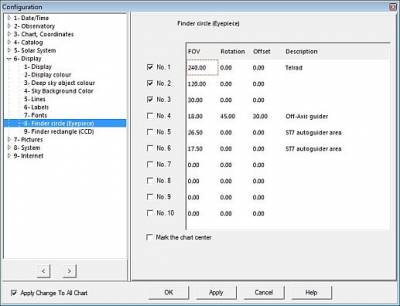
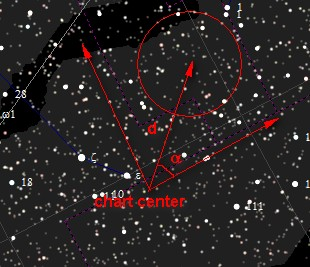
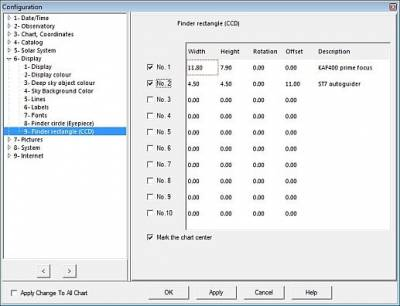

Weergave
Via het menu: Instellingen → Weergave.
Het Weergave venster heeft negen tabs:
Weergave

Via het menu: Instellingen → Weergave → Weergave
De manier waarop het programma sterren en deep sky objecten weergeeft.
{kind=link}
Je kunt kiezen om de deep sky objecten met belijningen (Lijnmodus) of als gevulde gebieden (Grafisch) weer te geven.
De weergave van sterren kun je instellen op Lijnmodus (een eenvoudige manier van weergave, niet erg cosmetisch), Fotografisch (een beetje zoals op een foto) of Parametrisch.
In parametrische modus heb je verschillende vormen van controle over de weergave van de sterren zoals de helderheid, contrast en kleurverzadiging. Vier combinaties van deze parameters zijn in het programma opgenomen: Standaard, Blote oog, Veel kleur en Zwart/wit.
Kleur

Via het menu: Instellingen → Weergave → Kleur
In dit tabje kun je de kleur van allerlei objecten, lijnen en roosters op je kaart wijzigen. Klik simpelweg op het cirkel of vierkant onder de benaming van het soort object of lijntype. Kies daarna de kleur door een klik in het gekeurde pop-up venster, gevolgd door een klik op de “OK” knop.
The bovenste rij is voor de sterren, geordend op basis van hun B-V magnitude verhouding (sterkleur). De volgende rij toont je Zonnestelselobjecten en allerlei soorten lijnen. Je kunt de kleuren voor deepsky objecten in het volgende tabje wijzigen.
Via de knoppen onder Standaard kleur kun je voor ingestelde standaard kleurschema's instellen: Standaard zal je de kleuren op de kaart weer laten geven zoals je ze ongeveer aan de echte hemel zou zien. Rood zal de de weergave naar een oogvriendelijke kleur omzetten, Wit op Zwart geeft zwarte objecten op een witte achtergrond, en Zwart op wit geeft witte objecten op een zwarte achtergrond (De functie van de laatste twee knoppen zit omgewisseld, bug report 457).
{kind=link}
Onder de Nachtzicht knop en Standaard knop kun je de weergegeven kleuren-thema's definiëren wanneer je de Nachtzichtknop in de hoofdbalk aan of uit zet.
Je kunt configureren welke sterren-catalogi het programma gebruikt via het tabje CdC Sterren via het menu Instellingen → Catalogi. Je kunt de weergave van sterren aan of uit zetten door op het  icoontje te klikken op de objectenbalk.
De weergave van planeten, kometen, planetoïden, ecliptica, equators, horizon en oculairs kun je ook aan of uitzetten via de bijbehorende icoontjes op de objectenbalk in objecten groep a of de objecten groep b.
icoontje te klikken op de objectenbalk.
De weergave van planeten, kometen, planetoïden, ecliptica, equators, horizon en oculairs kun je ook aan of uitzetten via de bijbehorende icoontjes op de objectenbalk in objecten groep a of de objecten groep b.
Deep sky kleur

Via het menu: Instellingen → Weergave → Deep-sky kleur
Er zijn vele verschillende soorten deep sky objecten die je op de kaart kunt weergeven. Met dit dialoogvenster kun je ieder soort object zijn eigen kleur geven voor een vlottere herkenning op de kaart.
Je kunt keuze maken uit een vooraf ingestelde kleurschema's of je eigen instellingen maken. Om kleuren te wijzigen kun je op het rechthoekje klikken. Klik in het pop-up venster je kleur, gevolgd door een klik op de “OK” knop. Je kunt ook de mate van proportionaliteit aanpassen van de weergegeven oppervlakte helderheid.
Om je deep sky catalogi in te stellen ga je naar het tabje CdC Deep sky via het menu Instellingen → Catalogi. Je kunt de weergave van deep sky objecten aan of uit zetten door een klik op het  icoontje van de objectenbalk.
icoontje van de objectenbalk.
{kind=link}
Hemelkleur

Via het menu: Instellingen → Weergave→ Hemelkleur
Met dit dialoogvenster kun je de hemelkleur van je kaart kiezen.
With this dialog box you can choose the background colour for your chart.
Als je de Vast zwart radioknop selecteert, zal de achtergrond van de kaart altijd dezelfde blijven. Als je voor Automatisch kiest, dan zal de hemelkleur afhangen van de tijd en datum: De ingestelde kleuren voor nautische en astronomische schemer, overdag of wanneer de Maan boven de horizon is.
Je kun de kleurinstellingen voor de vaste kleur of de schemerkleur wijzijgen door op de gekleurde gebieden te klikken.
Je kunt omschakelen tussen een vaste achtergrondkleur en het ingestelde kleurschema door te klikken op het  icoontje van de markeringen groep op de objectenbalk.
icoontje van de markeringen groep op de objectenbalk.
{kind=link}
Lijnen

Via het menu: Instellingen → Weergave → Lijnen
Hier kun je instellen welke objecten je als lijnen op de kaart wilt weergeven. Ook kun je in stellen in wat voor lijnmodus je deze objecten wilt weergeven:
{kind=link}
Toon coördinaten rooster zal het coördinatenrooster weergeven zoals dat is ingesteld in het menu Instellingen → Kaart, coördinaten.
Je kunt het equatoriale rooster toevoegen door Voeg equatoriaal rooster toe aan te vinken. Dit rooster is handig bij gebruik van een telescoop met een equatoriale montering. Door Toon rooster label aan te vinken zorg je ervoor dat het programma de coördinaatnummering samen met het rooster op de kaart afbeeld.
Als je de ecliptica (voor een waarnemer op Aarde is dat de schijnbare baan aan de hemel waar Zon, Maan en planeten door heen bewegen) als lijn op de kaart wilt markeren, vink dan het Toon ecliptica selectievakje aan. Zo kun je ook de galactische equator (evenaar van onze Melkweg) zichtbaar maken op de kaart, simpelweg door het Toon galactische equator aan te vinken.
Verder heb je nog wat mogelijkheden om aanpassingen te maken, in vier groepen:
- Sterrenbeeld figuren: Als Toon sterrenbeeld figuren aangevinkt is, zal het programma de sterrenbeelden via lijnen weergeven.
- Melkweg: Als Toon de Melkweg is aangevinkt, zal het programma de begrenzing van de Melkweg afbeelden. Vul de Melkweg zal binnen de belijningen het gebied opvullen.
- Sterrenbeeld grenzen: Precies wat er staat, Toon sterrenbeeld grenzen zal ervoor zorgen dat het programma de grenzen van de sterrenbeelden op de kaart afbeeld.
- Eigenbeweging: Iedere ster heeft een eigenbeweging binnen ons Melkwegstelsel. Hier kun je de eigenbeweging op de kaart weer laten geven over de volgende xxx jaar.
Een gemakkelijke manier is om de weergave van deze lijnen aan of uit te zetten is via de
objectenbalk of via het menu Kaart → Lijnen/rooster
Labels

Via het menu: Instellingen → Weergave → Labels
Met het Toon de labels selectievakje bepaal je of de automatische weergave van alle labels geactiveerd is of niet, met uitzondering van de roosterlabels. (Weergave daarvan bepaal je met Toon rooster label selectievakje in het Lijnen tabje).
{kind=link}
Als je de kaartinformatie in de menubalk wilt weergeven, plaats dan een vinkje in het selectievakje Toon de kaart-informatie in de menubalk.
Met het Label object paneel kun je de kleur en de afmetingen van letters bepalen voor iedere klasse van objecten. Ander label staat voor de labels van de roosternummering en labels voor de windrichtingen op de horizon-lijn.
In de Ster label en de Sterrenbeeld label panelen kun je bepalen op welke wijze het programma de inhoud van de labels zal weergeven.
Magnitude verschil is een bereik (0 tot 10) om labels te filteren volgens de object magnitude:
Des te lager deze waarde, des te meer labels worden weergegeven. De exacte beschrijving hoe je bepaalt welke labels je laat weergeven: de magnitude-waarde van de weergegeven objecten zijn kleiner dan beeldveldnummer grensmagnitude - label Magnitude verschil. Voorbeeld: Beeldveldnummer limiet: 6, Label magnitude verschil: 2. 6 - 2 = 4. Het resultaat is dat het programma objecten met een magnitude waarde kleiner dan 4 met hun label zal tonen, het programma toont de objecten met een magnitude van 4 tot 6 zonder label.
Het programma zal de labels van slechts één catalogus tegelijk tonen. De voorkeursvolgorde waarin dat gebeurt is van boven naar beneden, zoals is weergegegven bij de instellingen van de ster catalogi en de deep sky catalogi.
Je kunt eigenschappen van de letters wijzigen via Instellingen → Weergave → Fonts.
Je kunt hier meer lezen over het bewerken van individuele labels. Wil je meer lezen over het toevoegen van je eigen labels, kijk dan hier.
Fonts

Via het menu: Instellingen → Weergave → Fonts
Via dit tab kun je het gebruikte lettertype (font) en de eigenschappen aanpassen binnen Cartes du Ciel / Sterrenkaarten.
Om een font te veranderen klik op het font icoontje, rechts van de categorie in de kolom “wijzig”.
{kind=link}
Klik op de Standaard knop om alle font-instellingen terug te zetten naar de standaard instellingen.
Beeldveld zoeker/oculair

Via het menu: Instellingen → Weergave→ Beeldveld zoeker/oculair
Via dit tabje kun je markeringen voor de beeldvelden van verschillende oculair-telescoop combinaties en zoekers vastleggen. Het programma hanteert de boogminuut als eenheid. Standaard zal de kaart de beeldvelden in het kaartcentrum tonen. Als het nodig is, kun je ook een beeldveld van een off-axis telescoop instellen. Handig voor je volgkijker. Dit doe je door je weer te geven beeldveld in te stellen met een Offset (de afstand in minuten tot het kaartcentrum), en de Rotatie in te stellen. Bij rotatie geef je de hoek in graden op, gerelateerd aan het equatoriale noorden, toenemend via oost, zuid en west. Offset is de afstand (in minuten) in noordelijke richting ten opzichte van het kaartcentrum. De offset accepteert geen negatieve waardes, gebruik een hoek van tussen de 90º tot 270º om het beeldveld in zuidelijke richting te verplaatsen.

Een gemakkelijke manier om de markeringen van je oculair en zoeker beeldvelden aan of uit te zetten gaat door een klikje op het  icoontje op de objectenbalk of via het menu Kaart → Lijnen / rooster → Toon veldmarkering oculair/zoeker/camera.
icoontje op de objectenbalk of via het menu Kaart → Lijnen / rooster → Toon veldmarkering oculair/zoeker/camera.
{kind=link}
{kind=link}
Beeldveld camera

Via het menu: Instellingen → Weergave → Beeldveld camera
Zoals bij de zoeker/oculair instellingen maakt dit tabje het mogelijk om het beeldveld van je camera te markeren. Hier is het beeldveld natuurlijk rechthoekig, met een breedte en hoogte. En ook hier is de eenheid in boogminuten. Standaard zal de breedte richting parallel zijn aan de hemelequator en gecentreerd zijn op het kaartcentrum. Op de dezelfde manier als bij Beeldveld zoeker/oculair maakt dit tabje het mogelijk om voor de camera een offset of rotatie in te stellen.
Een gemakkelijke manier om de weergave van de markeringen van je camera-beelden aan of uit te zetten, gaat door een klik op het
icoontje op het objectenbalk of via het menu Kaart → Lijnen / rooster → Toon veldmarkering zoeker/oculair/camera.
{kind=link}